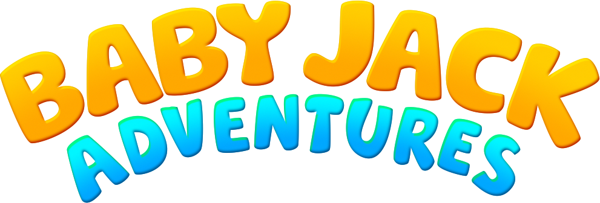

LEVEL 1
0 krill
0

SWIM
Swipe left / right to change lanes
Collect krill · Avoid predators · Find Sarah
HIGH SCORES
Watch the Film
Get the Book
Jack is lost.
NEW HIGH SCORE!
SAVE
Score
0
Level
1
Krill
0
Distance
0m
Watch the Film
Get the Book
TRY AGAIN
A hand reaches down through the light.
Jack's fin breaks the surface.
He found her.
✦ Sarah is near ✦
KRILL BLOOM!
HIGH SCORES
ONLINE
THIS DEVICE
Rank
Name
Score
Level
CLOSE